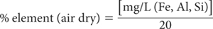
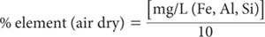

Acid ammonium oxalate (acid oxalate) extracts Fe and Al from poorly crystalline minerals such as ferrihydrite, allophane and imogilite; minerals containing Fe2+ such as magnetite; and organic matter. Attack on poorly crystalline lepidocrocite has been reported by Childs and Wilson (1983).
Table 13.1. The range and median concentration of Tamm Oxalate-extractable Fe, Al and Si at three depths (if present) for 11 New Zealand reference soils. Results are expressed on an oven-dry basis.
Tamm Oxalateextractable elements |
Soil depth (cm) |
Concentration (%) |
|||
Minimum |
Median |
Maximum |
|||
Fe |
0–20 |
0.03 |
0.39 |
1.89 |
|
≈50 |
0.11 |
0.3 |
1.67 |
||
≈100 |
ND† |
0.18 |
0.34 |
||
Al |
0–20 |
0.03 |
0.17 |
0.31 |
|
≈50 |
0.7 |
0.18 |
0.91 |
||
≈100 |
0.01 |
0.065 |
0.31 |
||
Si |
0–20 |
ND |
ND |
0.09 |
|
≈50 |
ND |
ND |
0.21 |
||
≈100 |
ND |
0.005 |
0.05 |
||
Table 13.2. Summary details of method codes, technologies, method titles, and notes on soil tests described in this chapter.
Code |
Technology |
Test method |
Notes |
13A1 |
Empirical extraction – with an ICPAES (preferred) or AAS or possibly a FES finish. |
Acid-oxalate-extractable (Tamm) Fe, Al and Si. |
Reasonable estimate of acid oxalateextractable Fe, Al and Si. |
13B1 |
Pyrophosphate-extractable Fe and Al. |
Reasonable estimate of pyrophosphate-extractable Fe and Al, provided very fine soil particles are removed from extracts prior to analysis. |
|
13C1 |
|
Citrate/dithionite-extractable Fe and Al. |
Reasonable estimate of secondary Fe oxides, including oxyhydroxides and the fractions extracted by pyrophosphate and acid oxalate. Expect background interference with FES. |
13D1 |
Empirical extraction with a blue silicomolybdous colorimetric finish. |
Acid-extractable soil Si – automated colour |
Expect similar analytical precision to soil P Method 9G. |
13D2 |
Empirical extraction – with an ICPAES finish. |
Acid-extractable soil Si – ICPAES |
Expect similar analytical precision to soil P Method 9G. |
There is a long-held view (Tamm 1932) that the reactivity of acid oxalate on crystalline oxides and crystalline clay minerals is very limited. There are, however, exceptions. For example, the extractant can remove crystalline Fe oxides if a source of Fe2+ is present, as occurs with siderite and maghemite (Schwertmann and Taylor 1989; Taylor 1987). This can result in overestimates of Fe associated with poorly crystalline soil minerals. The reagent will also dissolve some Al oxides present in soils. Relations between ‘Tamm’ Fe and Al have been demonstrated by Metson and Cox (1978).
The reagent has little effect on the clay minerals kaolinite, montmorillonite, vermiculite or illite but it does react with biotite and chlorite, which are both trioctahedral-layer silicates. It should only be used on calcareous soils if there is prior removal of CaCO3 (see Note 1). Loeppert and Inskeep (1996) report that extracts of acid ammonium oxalate will include water-soluble Fe, exchangeable Fe, and part of the organically-bound Fe. As an empirical chemical test, the method is influenced by reaction time, temperature, and the vigour of shaking.
To avoid possible changes due to photo-reduction of Fe-containing soil minerals, extraction with acid oxalate must occur in the dark (Schwertmann and Taylor 1989). The method, which employs an initial soil/extract ratio of 1:100, is similar to those described by Blakemore et al. (1981, 1987). Above 5% acid oxalate-extractable Fe or Al, the soil/extract ratio should be increased to 1:200, as demonstrated by Parfitt (1989).
Acid Oxalate Reagent
Dissolve separately 16.2 g ammonium oxalate [(COONH4)2.H2O] and 10.8 g oxalic acid [(COOH)2.2H2O] in deionised water, combine and make to 1.0 L. Check and adjust pH to 3.0±0.05 with either chemical. This reagent corresponds approximately to 0.114 M ammonium oxalate and 0.086 M oxalic acid, giving a total oxalate concentration of 0.2 M.
Caesium Chloride Stock Solution
1 L contains 20 g of caesium.
Dissolve 25.34 g caesium chloride (CsCl) in 1 L deionised water.
1+4 Caesium Chloride Diluent Solution
Dissolve 1.6 g CsCl in 400 mL of deionised water, add 25 mL 10 M HCl, and make to 1.0 L with deionised water.
Combined Fe, Al and Si Primary Standard
1 L contains 1000 mg of Fe, Al and Si, respectively.
Commercial standard solutions may be used; otherwise prepare as follows:
Aluminium. Dissolve 1.000 g pure aluminium wire in 20 mL hydrochloric acid (HCl; 10 M) with the addition of a trace of mercury salt (one small crystal of mercuric chloride; HgCl2) to catalyse the reaction.
Iron. Initially clean about 1.5 to 2.0 g pure iron wire in 10 M HCl, wash with deionised water and dry quickly. Weigh 1.000 g of the iron wire, after cutting into small pieces, and dissolve in 40 mL 5.0 M HCl, heating on a water bath if necessary.
Silicon. Finely grind pure silica sand (SiO2) and dry to constant weight at 450°C. Cool, and weigh 2.139 g into a platinum crucible. Add 12.0 g sodium carbonate (Na2CO3). Heat over a burner or in a muffle furnace until molten and continue heating at 1000°C for 30 min. Cool and dissolve the melt in about 200 mL deionised water. If the solution is not clear, discard, and grind the silica to a finer particle size before fusing with Na2CO3.
Combine firstly the Al and Fe solutions in a 1.0 L volumetric flask and add ≈500 mL deionised water. Add the Si solution, slowly with stirring, and make to volume with deionised water. Add a few drops of toluene (C6H5CH3) as preservative.
Combined Fe, Al and Si Working Standards
Dispense 0, 2.5, 5.0, 12.5, 25.0, 37.5 and 50.0 mL combined Fe, Al and Si Primary Standard into 500 mL volumetric flasks. To each add 25 mL CsCl Stock Solution, 100 mL Acid Oxalate Reagent, 10 mL 10 M HCl, and make to volume with deionised water. These solutions contain 0–100 mg/L of Fe, Al and Si. For a 1:100 soil/solution ratio and a 1+4 dilution of sample extracts only, soil concentrations are 0, 0.25, 0.5, 1.25, 2.5, 3.75 and 5.0% of Fe, Al and Si, respectively.
Shake 1.0 g air-dry soil (<0.5 mm) with 100 mL Acid Oxalate Reagent in 250 mL bottles in the dark on an end-over-end shaker for 4 h at 25°C. Following extraction, continue to avoid exposure to light for as long as the soil and Acid Oxalate Extractant remain in contact. Centrifuge to obtain ≈50 mL of extract, which should be clear when viewed using reflected light. Following separation of extract and soil, there is no short-term need to store extracts in the dark prior to instrumental analysis.
For expected soil concentrations of Fe in the range 0–5%, dilute sample extracts only 1+4 using the 1+4 CsCl diluent solution. If higher concentrations are expected, re-extract fresh soil using a soil/solution ratio of 1:200 prior to 1+4 dilution of sample extracts only with the 1+4 CsCl diluent solution.
Determine Al, Fe and Si in standards, blank and diluted extracts by ICPAES. Alternatively, determine Al and Fe in standards, blank and diluted extracts by AAS or by FES, the latter two using a lean nitrous oxide-acetylene flame, which should have a ‘red feather’ zone 1–2 cm high. For Si by AAS, a moderately rich nitrous oxide-acetylene flame is preferred.
Determine concentrations of individual elements in mg/L from separate calibration curves (or regression equations) and apply a blank correction. If any delay in instrumental analysis is expected, the clarified extracts should be kept cool and stored in the dark to prevent photo-induced decomposition of oxalate, as this may result in loss of Fe by precipitation (Borggaard 1988). See Note 2 re the concentration of oxalate.
For 1+4 dilution of extracts and a 1:100 soil/solution ratio:

For 1+4 dilution of extracts and a 1:200 soil/solution ratio:

Report as oxalate-extractable element (Fe, Al, Si) (%) on an oven-dry basis. Use the air-dry moisture to oven-dry moisture ratio to convert to an oven-dry concentration. Refer to Method 2A1 for guidance with regard to this soil moisture calculation.
1. Calcareous soils should be pretreated to remove any CaCO3, since oxalic acid will react with solid-phase CaCO3, thus affecting the pH of the oxalate/oxalic acid buffer. Also, oxalate precipitation as the insoluble Cs salt can be expected. The preferred pre-treatment involves use of ammonium acetate at pH 5.5 (Loeppert and Inskeep 1996).
2. Avoid high concentrations of oxalate during instrumental analysis (particularly by AAS) as oxalate can cause clogging of the burner head. To minimise this possibility, dilution (known volume) with deionised water to the extent possible is recommended by Loeppert and Inskeep (1996).